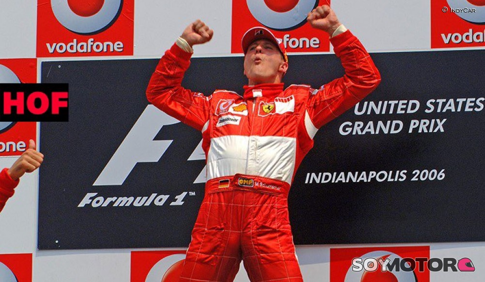

Michael Schumacher
Biografía
Michael Schumacher es un expiloto alemán de Fórmula 1 nacido el 3 de enero de 1969. Michael
comenzó en el mundo de las carreras desde muy pequeño, se montó por primera vez en un kart a los 4 años, a los 16 quedó subcampeón
mundial de karting junior y después campeón de Europa a los 18.
Fué en 1987 cuando se metió en las fórmulas de promoción, y en 1990 se coronó campeón en la fórmula 3 alemana. Al año siguiente, participó por primera vez en la fórmula uno, esta no fue una de sus mejores temporadas. En los 5 años siguientes, junto a la escudería Benneton, consiguió el podio tres años seguidos y los otros dos años quedó en una buena posición.
Fué en 1987 cuando se metió en las fórmulas de promoción, y en 1990 se coronó campeón en la fórmula 3 alemana. Al año siguiente, participó por primera vez en la fórmula uno, esta no fue una de sus mejores temporadas. En los 5 años siguientes, junto a la escudería Benneton, consiguió el podio tres años seguidos y los otros dos años quedó en una buena posición.

Después de esto, se pasó a la escudería Ferrari, y se quedó allí por 10 temporadas (1997-2006), de las cuales ganó 4
y las demás excepto una no bajó del 3er puesto. Esto fue una gran alegría para Ferrari ya que a pesar de los buenos pilotos que pasaban por la
escudería, ninguno conseguía quedar primero, pero Schumacher rompió esto. Schumacher se retiró de la Fórmula 1 durante los siguientes 4 años, y en
2010 volvió con la escudería Mercedes, hasta 2012, pero en estas 3 temporadas no consiguió buenos resultados. Tras el anuncio de la contratación de Lewis
Hamilton por parte de Mercedes-Benz para 2013 dejó a Schumacher sin volante. Pocos días después, Schumacher confirmaba su retirada definitiva de la competición.
Por desgracia ese mismo año Schumacher tuvo un accidente esquiando lo cual le dejó en coma hasta hoy en día. No se sabe mucha información sobre el estado actual de Schumacher, pero todos esperamos que algún día nos de una buena alegría.
Por desgracia ese mismo año Schumacher tuvo un accidente esquiando lo cual le dejó en coma hasta hoy en día. No se sabe mucha información sobre el estado actual de Schumacher, pero todos esperamos que algún día nos de una buena alegría.
Logros importantes de Schumacher
| Escudería | Años | Poles | Victorias | Posición |
|---|---|---|---|---|
| 1991 | 0 | 0 | - | |
| 1991-1996 | 10 | 19 | 13,3,4,1,1,1 | |
| 1997-2006 | 58 | 70 | 3,-,2,5,1,1,1,1,3,2 | |
| 2010-2012 | 0 | 0 | 9,8,13 |
Michael Schumacher ganó un total de 7 mundiales de Fórmula 1, y 89 carreras a lo largo de los años en los quue ha competido.
